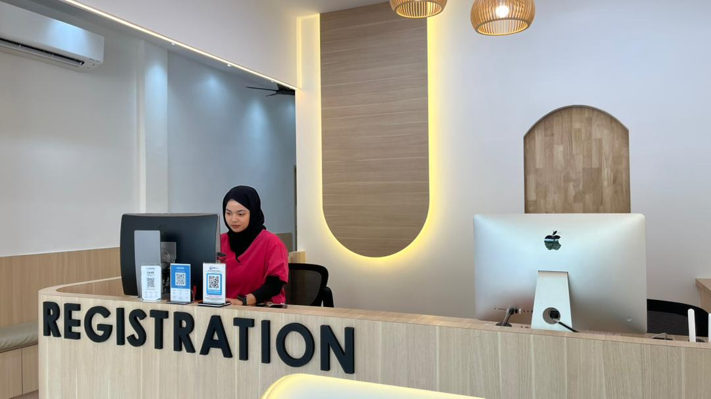

Rawatan Am & Keluarga
Konsultasi doktor untuk demam, batuk, selesema, sakit tekak, masalah kulit dan penyakit biasa.
Rawatan keluarga, ibu dan anak serta penjagaan kesihatan komuniti di Dataran Dwitasik.

Klinik Putrijaya Cheras menyediakan perkhidmatan klinik keluarga untuk pesakit dewasa, wanita, ibu mengandung, bayi dan kanak-kanak.
Dapatkan konsultasi doktor dan rawatan yang sesuai mengikut keadaan kesihatan anda dan keluarga.
Konsultasi doktor untuk demam, batuk, selesema, sakit tekak, masalah kulit dan penyakit biasa.
Pemeriksaan kehamilan, buku pink, scan kehamilan dan pemantauan kesihatan ibu.
Pemeriksaan kanak-kanak, vaksin, nebuliser, jaundice screening dan rawatan penyakit biasa.
Medical check-up, blood test, ECG serta pemeriksaan kesihatan untuk individu dan syarikat.
Influenza, typhoid, hepatitis, pneumococcal dan vaksin lain selepas konsultasi doktor.
Dressing luka, rawatan minor, nebuliser, suntikan dan prosedur klinik yang bersesuaian.
Klinik terletak di Jalan Dwitasik 1, Dataran Dwitasik, berhampiran kawasan Bandar Sri Permaisuri.
Walk-in diterima untuk rawatan am. Untuk scan kehamilan atau perkhidmatan tertentu, hubungi WhatsApp terlebih dahulu untuk semak slot.
Ya. Klinik beroperasi dari jam 8:00 pagi hingga 11:00 malam setiap hari.
Ya. Klinik menyediakan pemeriksaan bayi dan kanak-kanak, vaksin, nebuliser, jaundice screening dan rawatan penyakit biasa.
Hubungi atau WhatsApp 018-314 4588 untuk pertanyaan servis, harga dan slot temujanji.
Hubungi cawangan Cheras untuk semak servis dan waktu kunjungan.